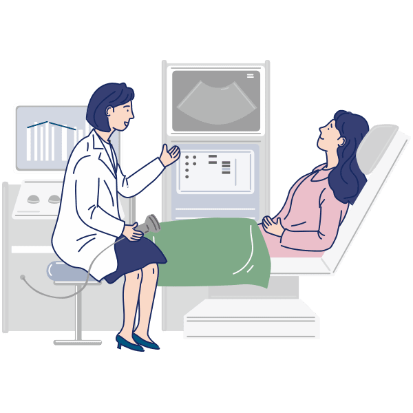
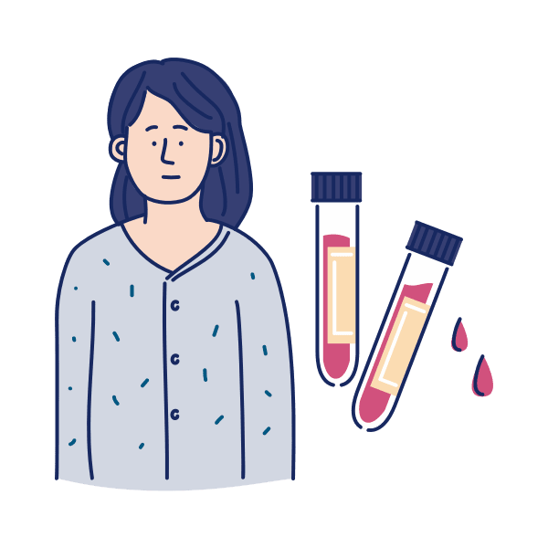
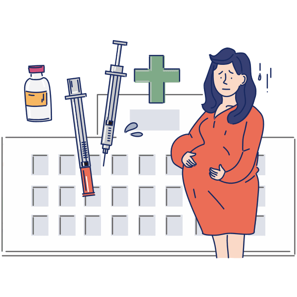

1
임신 11주~13주에는
1차 기형아 검진을 받아야 합니다.
1차 기형아 검진은 태아의 목덜미 투명대를 측정하며, 목덜미 투명대가 3mm 이상인 경우 염색체 이상을 의심할 수 있습니다.

2
임신 15주~20주에는
2차 기형아 검진을 받아야 합니다.
2차 기형아 검진은 통합 선별 검사(integrated test)라고 부르며, 1차 검진에서 채취한 혈액 검사와 2차 검진에서 채취한 혈액 검사를 종합적으로 분석하여 염색체 이상을 선별합니다.

3
임신 24주~28주에는
임신성 당뇨 검사를 받아야 합니다.
임신성 당뇨검사는 포도당을 섭취하여 혈당이 증가했을 때 신체가 얼마나 잘 대처하는가를 확인하는 검사법으로, 경구 당부하 검사라고도 부릅니다.
임신성 당뇨 판정을 받은 경우, 몸무게가 4,000g 이상인 거대아가 태어날 가능성이 높습니다.
난산의 위험도 증가하고, 분만 후에도 당뇨병이 생길 가능성이 높습니다.

4
임신 전 기간에는
임신성 고혈압 검사를 받아야 합니다.
임신성 고혈압은 임신 20주 이후에 혈압 검사를 하였을 때, 수축기 혈압이 140mmHg 이상 또는 이완기 혈압이 90mmHg 이상인 경우를 의미합니다.
임신성 고혈압이 위험한 이유는 단백뇨가 발생하면서 '자간전증(임신중독증)'으로 발전하기 때문입니다.
자간전증은 전체 산모 사망의 15% 정도를 차지하며, 갑작스러운 태아사망의 원인이 되기도 하는 심각한 질환입니다.
또한, 자간전증을 치료하는 근본적인 방법은 분만이기에 조산으로 이어질 수도 있습니다.
임신성 고혈압과 임신성 당뇨는 미리 예방하기는 어렵습니다.
무엇보다 정기적으로 산전 검사를 받고, 조기에 증상을 발견하여 관리하는 것이 중요합니다.
또한, 임산부가 편안하고 긍정적인 마음으로 임신기간을 잘 보낼 수 있도록 주변의 도움과 격려가 필요합니다.